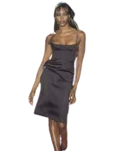
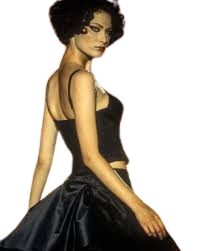
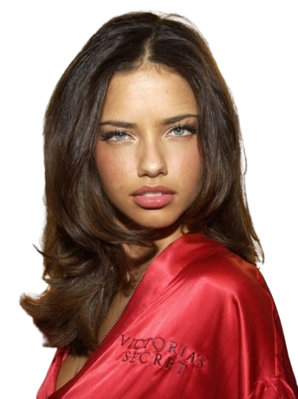

Modelos influyentes
Naomi Campbell

Fue la primera modelo negra en aparecer en la portada de numerosas revistas de moda de lujo.A finales de la década de 1980, Campbell se había consolidado como una de las modelos más prestigiosas, las supermodelos, que ganaban millones de dólares y eran famosas más allá del mundo de la moda. Ha aparecido en la portada de más de 500 revistas y ha desfilado en pasarelas y campañas publicitarias para muchos de los diseñadores y marcas de moda más importantes del mundo; como: Versace, Ralph Lauren, Vivienne Westwood, Chanel e Yves Saint Laurent.
Shalom Harlow

Es una modelo y actriz canadiense, comenzó su carrera de modelo siendo aún menor de edad y con el paso del tiempo se fue convirtió en una de las supermodelos más destacadas de la década de 1990, su nombre significa "paz" en hebreo.Su ascenso a la fama coincidió con el de la londinense Kate Moss, de quien, al igual que Shalom, se decía que pertenecía a la "new breed" de supermodelos de mediados de los 90. Vegetariana comprometida, apareció en anuncios impresos de DKNY y en 1994 hizo su gran debut en la pasarela de alta costura de Valentino en París.
Adriana Lima

La legendaria carrera de Adriana Lima en la industria del modelaje comenzó con tan solo 15 años. Hoy en día, es uno de los nombres más reconocidos de la moda, tras liderar la marca Victoria's Secret como uno de sus codiciados ángeles durante casi 20 años.